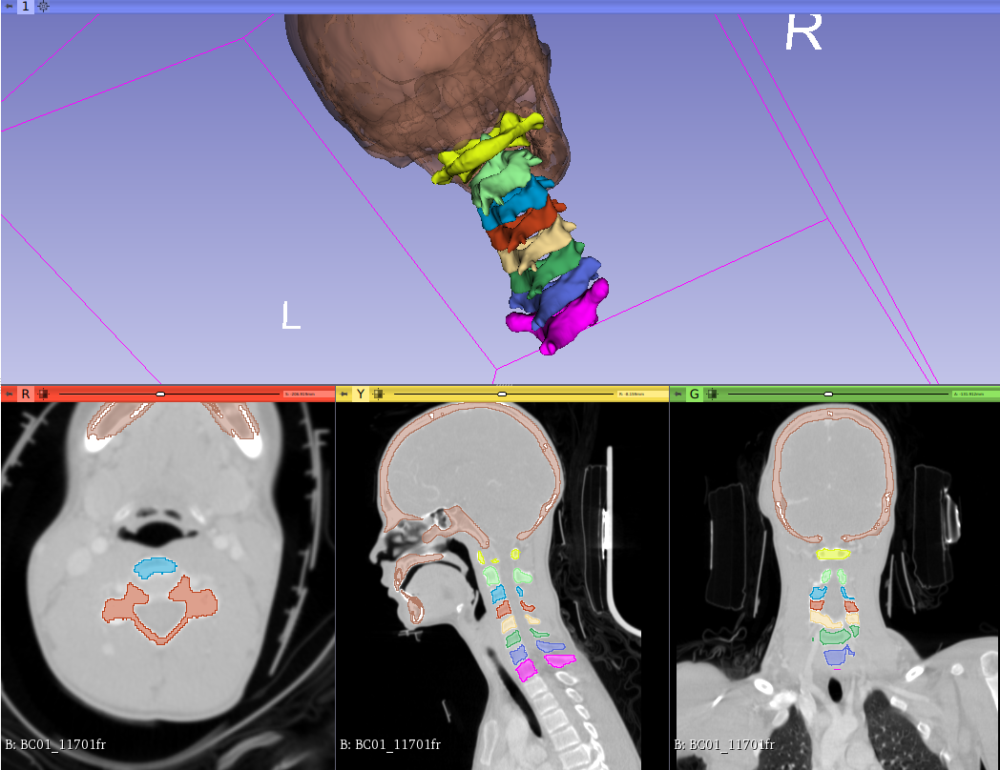
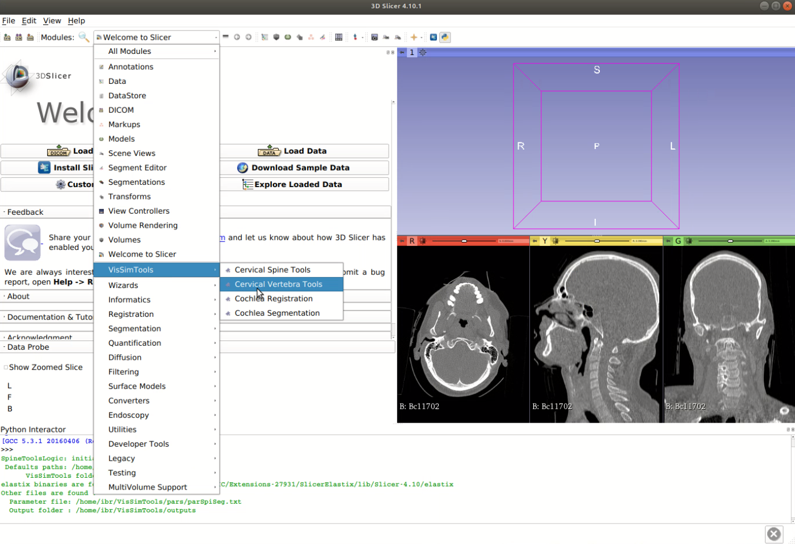
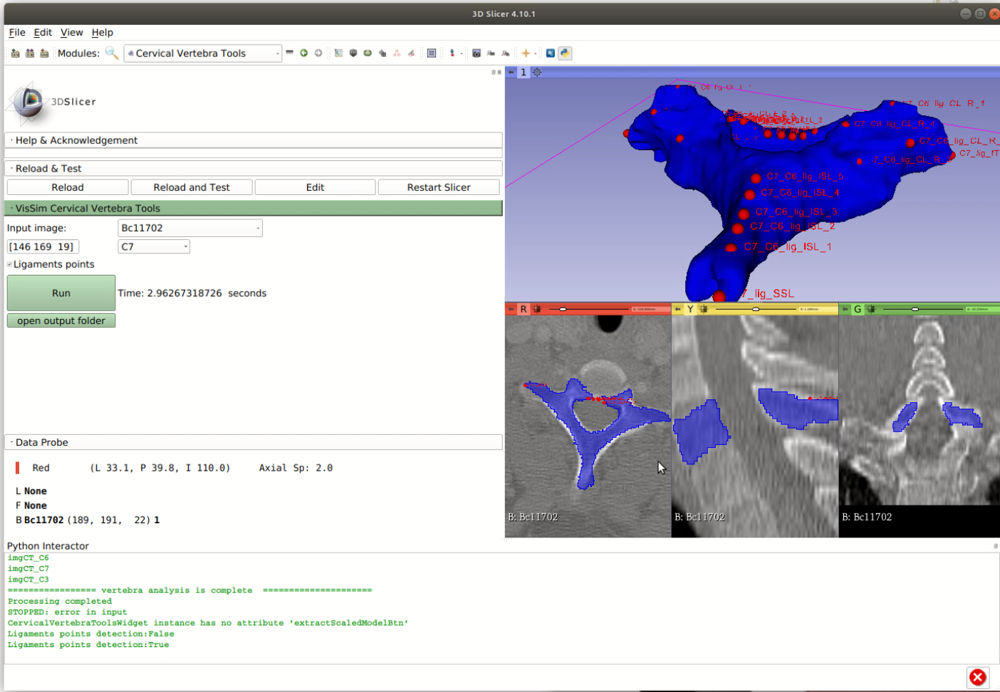
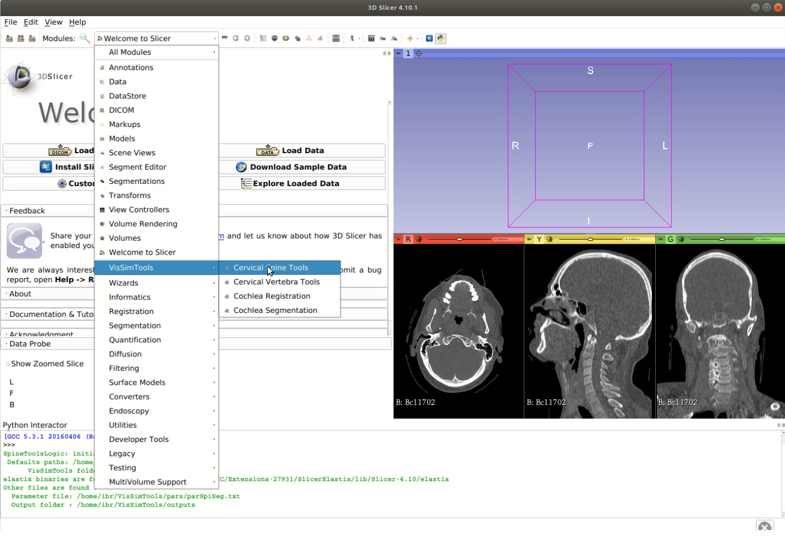
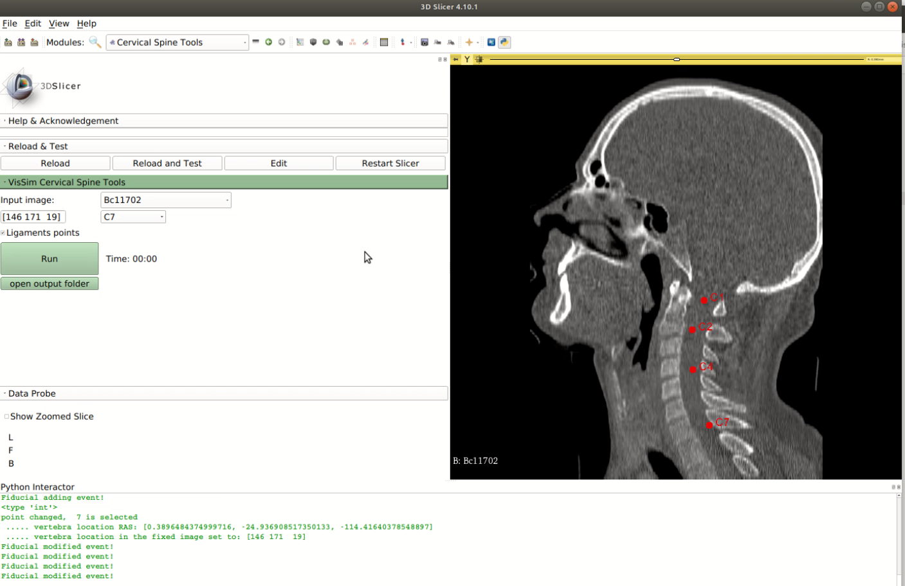
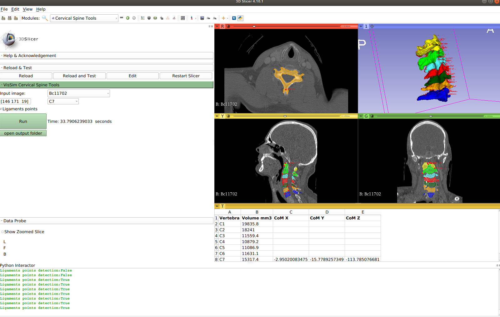

Slicer Cervical Spine Documentation
The cervical spine is the upper part of the spine that supports the head and its movement. It contains seven vertebrae C1 to C7.
There are two modules in this extension (more are coming). Both modules do the same tasks but the first one for a single vertebra and the second module for the complete cervical spine.
Features:
- Work on multi-modal images (so far it is tested against CT and MRI).
- fast (around 5 seconds).
- Automatic segmentation.
- Automatic ligaments points detection.
- Can be generalized to other parts of the spine or body.
Plese note that the extension is still not perfect as it uses rigid transform to get stable results. It is a good start to have more accuarte methods in the future e.g. by using seconds stage non-rigid transformation or using points from the resulted segmentation as seed points in other ethods.
Cervical spien sample datasets are available in Slicer Data Store module. You are welcome to contribute by correcting, enhancing, optimising the code or sharing your cervical spine dataset. For questions or problems using this extension please use gitHub issue or post in 3D Slicer forum. For more details please read these related publications:
- Ibraheem AL-Dhamari, Sabine Bauer, Eva Keller and Dietrich Paulus, Automatic Detection of Cervical Spine Ligaments Origin and Insertion Points. Accepted in The IEEE International Symposium on Biomedical Imaging (ISBI) 2019, Venice, Italy.
- Ibraheem Al-Dhamari, Sabine Bauer, Dietrich Paulus, (2018), Automatic Multi-modal Cervical Spine Image Atlas Segmentation Using Adaptive Stochastic Gradient Descent, Bildverarbeitung für die Medizin 2018 pp 303-308.
How to use:
The following sections give instructions how to use these modules. A more detailed video demo can be found in the links bellow these sections.
Cervical Vertebra Tools:
1. Load the Cervical Vertebra Tools module under VisSimTools.
2. Select a vertebra and click on its location in the image. This location is used for cropping purposes so it is not important if it is not accurate.


3. Click on "Run". Note that you can disable/enable getting and displaying the ligaments point using the above checkbox.

4. In a few seconds, you get the segmentation and the ligamnets point. 
Cervical Spine Tools:
1. Load the Cervical Spine Tools module under VisSimTools.
2. Similar to step 2 above, select 4 vertebrae C1,C2,C3 and C4. Other vertebrae locations will be calculated from them.
3. Click on "Run". Note that you can disable/enable getting and displaying the ligaments point using the above checkbox. A table with the volume size and the center of mass of C7 will be displayed as well. This center of mass can be used later to shift the cervical spine to be used with externl simulation tools.
Resources: